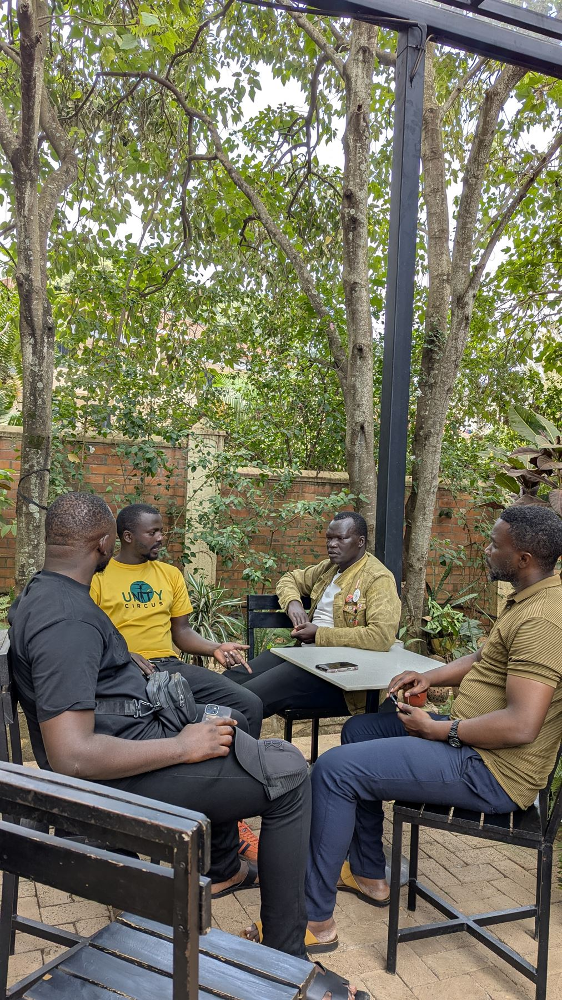
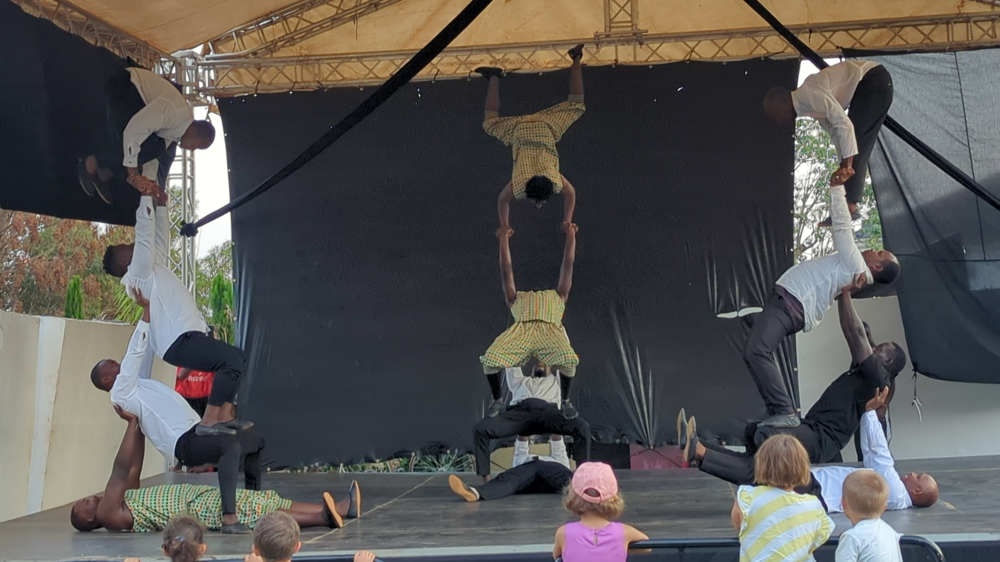
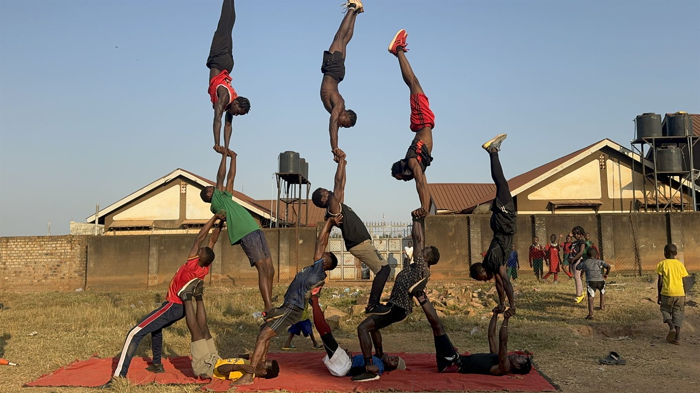
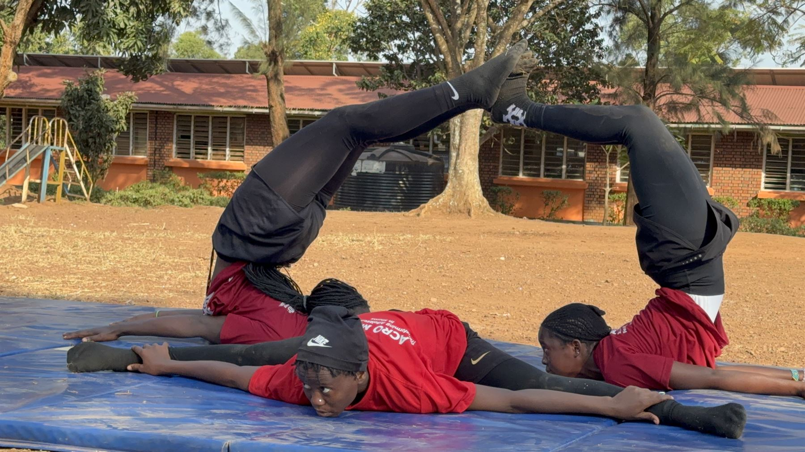

Our story
We began with a belief that circus arts could help young people see new possibilities for their lives.
Explore our story
About Acromind Initiative
We use circus arts and creative expression to help children and youth in Uganda build confidence, connection, and a sense of possibility.
Who we are
AcroMind Initiative is a Uganda-based non-profit transforming the lives of vulnerable children and youth through circus arts. Every workshop ends with a small showcase, and every round of applause becomes a reminder that this young person has worth.
We began with a belief that circus arts could help young people see new possibilities for their lives.
Explore our storyOur work is shaped by young people, local mentors, families, and community partners.
Meet our communityCare, dignity, and protection are part of every programme and every relationship.
Ask a safeguarding questionRead updates about our activities and community events.
View programme updatesOur values
We listen carefully and make space for young people to lead their own stories.
We celebrate effort, curiosity, and the courage to try something new.
Strong relationships make it possible for individuals and communities to thrive.



